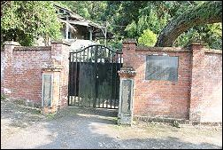
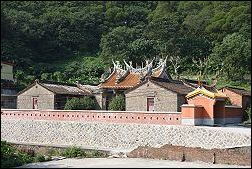
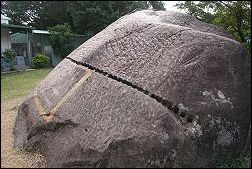

| |
|
|
淡水的古蹟數量多與多元化的特性，是台灣鄉鎮古蹟群中最特殊的地方，其包括我們將淡水地區有關的被列為古蹟或有相關歷史的古建物
值得我們探索與研究的古蹟整理如下： |
|
（一） |
寺廟：福祐宮、龍山寺、鄞山寺、清水祖師廟 。 |
|
（二） |
宅第：多田榮吉故居、公司田溪程氏古厝、崎仔頂施家古厝、
馬偕故居、姑娘樓、牧師樓、紅樓、淡水日商中野宅、水源地李家古厝。 |
|
（三） |
關塞：滬尾砲台、江頭砲台遺址。 |
|
（四） |
衙署：紅毛城、前清淡水關稅務司官邸、領事館。 |
|
（五） |
書院：理學堂大書院。 |
|
（六） |
碑碣：關渡媽祖石。 |
|
（七） |
教堂：淡水禮拜堂、法蒂瑪天主教堂（西班牙人1626年即在淡水設立天主教玫瑰堂）。 |
|
（八） |
墓葬：馬偕墓園、湖南勇古墓、外僑墓園。 |
|
（九） |
燈塔：望高塔。(雖然已不存，但為台灣第一座燈塔） |
|
（十） |
橋樑：淡水公司田溪橋遺跡。 |
|
（十一） |
其他：滬尾偕醫館、
淡水女學校、淡江中學八角塔、婦學堂、
滬尾小學校禮堂
原英商嘉士洋行倉庫
、淡水雙圳頭水源地
、水上機場、淡水氣候觀測
所
、淡水衛生下水道。 |
|
(十二） |
歷史建築：公司田溪程氏古厝、日本警官宿舍。 |
|
|
|
|
|
|
 |
|
淡水雙圳頭水源地
|
|
 |
| 水源地李家古厝 |
|
 |
|
關渡媽祖石 |
|